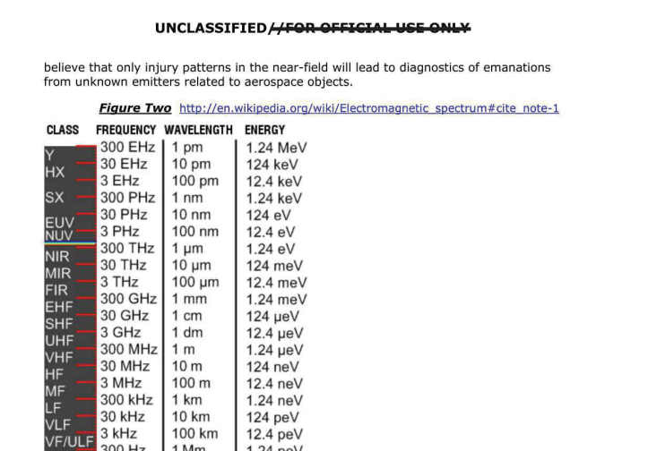
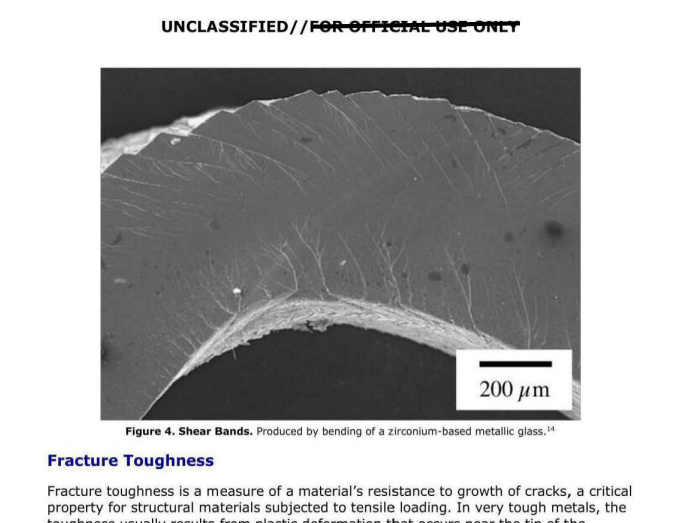

La sexta entrega de PURSUE es distinta a las anteriores. No es un mosaico de avistamientos sueltos: su columna vertebral es el archivo completo de un solo programa de inteligencia, AAWSAP, que entre 2008 y 2012 encargó estudios sobre tecnologías que todavía suenan a ciencia ficción. Alrededor de ese núcleo hay dos piezas históricas de la Fuerza Aérea de los años 50, tres videos infrarrojos recientes y, por primera vez, material que no viene de una agencia federal sino de una policía local.
Con 72 archivos publicados el 18 de septiembre, el total acumulado de PURSUE llega a 447 documentos en seis tandas. Ordenamos los seis hallazgos de esta entrega según cuánto cambian lo que sabíamos hasta ahora — del más puntual al que redefine buena parte del archivo.
La CIA no aparece
Es la primera tanda sin archivos de la CIA desde que la agencia debutó en la Release 03. Ni el FBI aportó material esta vez: los 72 archivos vienen solo del Departamento de Guerra y de la policía local de Colorado.
Una exención legal nueva
El 14 de septiembre, el Departamento de Guerra autorizó a personal militar, civil y contratistas a revelar información sobre UAP directamente a representantes de PURSUE, suspendiendo para esa comunicación las cláusulas de confidencialidad de sus acuerdos. No autoriza divulgación pública.
Estos son los seis expedientes de la Release 06 que más vale la pena conocer, explicados con su identificador de archivo y sin perder de vista qué tan lejos llega —y dónde se detiene— la evidencia real.
La primera fuente policial del archivo: cuatro videos de Colorado
LLE-UAP-PR001 y siguientes · Octubre 2023
Fotograma de uno de los cuatro videos de policía de Colorado, octubre de 2023.
Video oficial war.gov/UFO · vía FOX7 Austin / LiveNOW from FOX
Hasta esta tanda, todo lo publicado en PURSUE venía de agencias federales. La Release 06 rompe ese patrón con cuatro videos grabados con celular en octubre de 2023 por policía de Colorado, más una transcripción, reportados a AARO por la propia fuerza local.
El oficial que los reportó describió el fenómeno como silencioso, con luces intermitentes rojas, azules y verdes. El Pentágono aclara que el metraje está parcialmente difuminado antes de su publicación.
Tres videos infrarrojos: Medio Oriente y el Mar Amarillo
PR135/D108 · D109 · PR144 · 2022–2025
Medio Oriente, 2025 · sensor infrarrojo, CENTCOM.
Video oficial · vía FOX7 / LiveNOW

Mar Amarillo, 2023 · sensor infrarrojo, PACOM.
Video oficial · vía FOX7 / LiveNOW
El más reciente (2025) muestra seis pequeñas esferas agrupadas sobre Medio Oriente, de comportamiento "ágil", con una velocidad estimada por quien reportó de 480 mph. Otro, de 2022, describe objetos de uno a dos metros volando de forma esporádica a velocidades de 80 a 180 mph. El tercero, de 2023, es una esfera blanca captada por el Comando Indo-Pacífico sobre el Mar Amarillo.
Los tres casos figuran, como casi todo en PURSUE, como no resueltos.
La película de Tremonton, Utah — 2 de julio de 1952
PR159 / D102 · Expediente Blue Book
Fotograma de la película de Newhouse, Tremonton, Utah, 2 de julio de 1952.
Video oficial war.gov/UFO · vía FOX7 Austin / LiveNOW from FOX
Es uno de los casos clásicos de la ovnilogía estadounidense, ahora digitalizado: una filmación en Kodachrome de 16 mm hecha por el oficial de la Marina Delbert C. Newhouse, quien reportó un grupo de objetos brillantes y entregó el rollo a la Fuerza Aérea.
En diciembre de 1952, personal del Proyecto Blue Book, especialistas en globos y representantes de General Mills la revisaron juntos. El consenso: los objetos se comportaban como globos tipo almohada en vuelo. Uno de los representantes de la empresa no quedó tan convencido: le parecían demasiado brillantes y de maniobra demasiado rápida. El expediente no llegó a una identificación concluyente.
El audio del capitán Ruppelt — marzo de 1952
PR160 / D154 · ~1 hora de grabaciónUna hora de audio de una presentación del capitán Edward J. Ruppelt (quien más tarde dirigiría el propio Proyecto Blue Book) sobre la reorganización de la investigación de la Fuerza Aérea. Es la grabación que el representante Eric Burlison venía pidiendo que se hiciera pública.
"De unos 800 casos revisados, cerca del 20% son reportes muy buenos, de gente muy confiable, y aun así no se puede sacar ninguna conclusión."
Ruppelt señala además concentraciones de reportes cerca de Los Álamos, Albuquerque, White Sands y Oak Ridge: cuatro de los sitios más sensibles del programa nuclear estadounidense de la época. Más adelante en la grabación menciona retornos de radar del Comando de Defensa Aérea sin explicar, con velocidades estimadas entre 1.000 y unas 3.500 millas por hora, aunque aclara que los investigadores no habían descartado fallas del radar o fenómenos atmosféricos. A lo largo de toda la presentación repite la misma idea: la Fuerza Aérea no había determinado la naturaleza ni el origen del fenómeno, y hacía falta mejor recolección de datos físicos para evaluar los reportes.
"Esta cinta presenta un contraste con la idea de que el interés por UAP cerca de nuestros sitios nucleares es algo nuevo y explicable como drones adversarios de países extranjeros [...] muestra que ya desde 1952 nuestras fuerzas armadas recibían reportes creíbles de tecnologías no explicadas en nuestro espacio aéreo."
El documento sobre lesiones a observadores — 2010
DOW-UAP-D128 · 38 páginas · 11 marzo 2010
Varios rastreadores independientes del archivo lo señalan como el expediente más citado de toda la tanda. Fechado en 2010, describe lo que su autor llama evidencia de lesiones no intencionales a observadores humanos por sistemas aeroespaciales anómalos: tres ingenieros de antenas, antes sanos, que tras un evento presentaron enrojecimiento en la piel, calor y pérdida de cabello. Uno de ellos mostró, además, signos de enfermedad por radiación.
El autor compara el caso con 42 episodios publicados y unos 300 no publicados de lesiones por radiofrecuencia de fuente conocida, y plantea como hipótesis propia que algunos sistemas avanzados ya estarían desplegados sin que EE. UU. los comprenda del todo. Es la hipótesis del autor, no una conclusión oficial: el propio Pentágono aclara que estos documentos de referencia no implican validación de lo que describen.
El archivo completo del programa AAWSAP (2008–2012)
37 documentos DIRD (p. ej. D138, D139) · DIA
Es el hallazgo que define la tanda. AAWSAP —Advanced Aerospace Weapon System Applications Program— fue un programa de la Agencia de Inteligencia de Defensa creado en 2008 para estudiar la física y la ingeniería de aplicaciones aeroespaciales avanzadas frente a amenazas extranjeras proyectadas hasta 2050. Se cerró en 2012. La Release 06 incluye su documento de objetivos y 37 "Defense Intelligence Reference Documents" (DIRD) sobre propulsión warp, agujeros de gusano, antigravedad, masa negativa y camuflaje de invisibilidad.
La mayoría de esos 37 documentos ya circulaba, en parte, por pedidos de transparencia previos. Lo nuevo es que ahora salen con menos tachones: se restituyen datos como el nombre de las oficinas que los redactaron. El Pentágono los describe como productos de referencia y síntesis, no investigación original, y repite la misma advertencia para los 37: no implican validación de los conceptos que discuten.
Vale la pena precisar qué significa "síntesis" aquí, porque cambia bastante la lectura. Dos de los DIRD más comentados —D138, sobre manipulación de dimensiones extra, y D139, sobre agujeros de gusano transitables— no son investigación de campo del Pentágono: son revisiones de física teórica que ya existía. El agujero de gusano transitable lo formalizaron Michael Morris y Kip Thorne en un artículo de 1988, y el concepto de "burbuja de curvatura" que evita superar la velocidad de la luz localmente lo propuso el físico mexicano Miguel Alcubierre en 1994. Ambos trabajos son reales, están publicados y llevan décadas citándose en física teórica seria — y ambos coinciden en el mismo obstáculo: requerirían masa o energía negativa en cantidades que nadie ha logrado producir. Un DIRD de AAWSAP no añade un experimento nuevo a esa ecuación; resume lo que la física académica ya sabía y se pregunta si algo de eso sería explotable militarmente.
AAWSAP tampoco fue el único asomo oficial a este terreno. Entre 2016 y 2019, la Marina de EE. UU., a través del Naval Air Warfare Center Aircraft Division, tramitó y obtuvo varias patentes a nombre del ingeniero Salvatore Cezar Pais: un "dispositivo de reducción de masa inercial", un generador de ondas gravitacionales de alta frecuencia y un generador de campo electromagnético de alta energía. La Marina defendió esas solicitudes citando, en parte, presuntos avances de "adversarios pares" — lo que en su momento generó bastante escepticismo entre físicos, dado lo especulativo de las descripciones. Esas patentes no son parte de AAWSAP ni de esta tanda de PURSUE: son de otra agencia y hoy son de dominio público desde hace años. Pero confirman que el interés oficial por propulsión especulativa en esa misma década no estuvo confinado a un solo programa.
// Opinión de la Redacción
En 2023, el ex oficial de inteligencia David Grusch declaró bajo juramento ante el Congreso que el gobierno de EE. UU. mantiene un programa de recuperación de naves "de origen no humano" y las somete a ingeniería inversa. Han pasado tres años y seis tandas completas de PURSUE, y en el registro oficial no hay una sola fotografía de una pieza recuperada, ni el Departamento de Guerra ni AARO han confirmado que ese programa exista. Tampoco hay una sola patente que pueda trazarse hasta ese supuesto material. Las patentes que sí existen —las de Salvatore Pais, que mencionamos arriba— son ingeniería especulativa de la Marina, sin ningún vínculo documentado con una nave recuperada. Si de verdad hay tecnología reconstruida a partir de algo estrellado, ese sería el expediente que cambiaría todo. No ha aparecido.
Y ese es el patrón que nos preocupa más allá de esta tanda puntual. Van seis entregas, 447 archivos, y la proporción de papel viejo y puntitos infrarrojos frente a evidencia física verificable no ha dejado de inclinarse en la misma dirección. Esta misma Release 06 llegó días después de que varios comentaristas la señalaran como una posible distracción mediática, en medio de otras noticias que la administración preferiría no encabezar. No hace falta asumir una operación coordinada para notar la tendencia: cada tanda promete más de lo que entrega, y el volumen de documentos crece más rápido que las respuestas.
Nuestra postura en Mundo Maravilloso: seguiremos leyendo cada tanda completa, porque el archivo en sí importa. Pero declasificar por acumulación no es lo mismo que decir la verdad. Mientras el mundo real —guerras, crisis económicas, decisiones que sí nos afectan hoy— compite por la misma atención, seguir recibiendo memos de 1952 y esferas borrosas en vez de una sola prueba verificable empieza a sentirse menos como transparencia y más como su sustituto barato.
// Declaración oficial · Departamento de Guerra · 18 septiembre 2026
"Hoy, el Departamento de Guerra publica la sexta entrega de archivos históricos y desclasificados de Fenómenos Anómalos No Identificados como parte del Sistema Presidencial de Desclasificación e Información sobre Encuentros UAP (PURSUE) [...] El Departamento de Guerra y sus agencias socias trabajan activamente en la próxima entrega de archivos UAP."
Lo que cambia con la Release 06
- La CIA se ausenta por primera vez desde su debut en la Release 03
- Debuta una fuente no federal: policía local de Colorado
- El vacío de 2005–2012 empieza a llenarse con el archivo de AAWSAP
- Aparece, por primera vez, una hipótesis de daño físico documentado a observadores
Lo que no cambia
- Ningún documento confirma origen no humano
- AARO sostiene que ningún caso revisado muestra evidencia verificable de tecnología extraterrestre
- El ritmo entre tandas se sigue espaciando: 14, 21, 28, 28 y 42 días
- El período 1974–1984 permanece completamente vacío en el archivo
Nota de conteo: CBS News reportó 71 archivos en esta tanda (67 del Dep. de Guerra y cuatro videos de policía local). El manifiesto del portal que llevan rastreadores independientes lista 72, con cinco de policía local. Esta nota usa el conteo del portal.
Nada de esto certifica actividad extraterrestre. AAWSAP fue, por diseño, un ejercicio de síntesis teórica, no un programa de observación de campo, y el Pentágono lo repite en cada documento: estudiar una idea no es validarla. Pero el estudio de 2010 sobre lesiones deja pendiente una pregunta que ninguna tanda anterior había planteado con tanta claridad: si su hipótesis resultara cierta, qué tan al día está el análisis oficial sobre ese caso. PURSUE, de momento, no lo dice.
- Departamento de Guerra de EE. UU. (war.gov) — comunicado oficial y portal PURSUE, Release 06, 18 de septiembre de 2026.
- CBS News — cobertura del contenido de la Release 06, incluyendo el conteo de archivos por agencia.
- EarthSky / Root-Nation — desglose del archivo AAWSAP y de los videos infrarrojos incluidos en la tanda.
- DefenseScoop — cobertura de la exención legal del 14 de septiembre de 2026 para personal con acceso a información de defensa nacional sobre UAP.
- Avi Loeb (Medium) — análisis independiente de los videos publicados y comparación de velocidades reportadas.
- Rep. Eric Burlison (MO-07) — comunicado del 21 de septiembre de 2026 sobre la publicación del audio de Ruppelt, con detalles adicionales de la presentación (radar, sitios nucleares).
- Testimonio de David Grusch ante el Congreso (26 de julio de 2023) — declaraciones bajo juramento sobre un supuesto programa de recuperación e ingeniería inversa de naves; sin corroboración pública del Departamento de Guerra ni de AARO a la fecha de esta nota.
- Documentos primarios — war.gov/UFO, Release 06: DOW-UAP-D128, D138, D139; PR135, PR144, PR159, PR160/D154; LLE-UAP-PR001 y siguientes.
- Morris, M. y Thorne, K. (1988) — "Wormholes in spacetime and their use for interstellar travel", American Journal of Physics; base teórica citada por los DIRD sobre agujeros de gusano.
- Alcubierre, M. (1994) — "The warp drive: hyper-fast travel within general relativity", Classical and Quantum Gravity; base teórica citada por los DIRD sobre curvatura del espacio-tiempo.
- USPTO / Naval Air Warfare Center Aircraft Division — patentes de Salvatore C. Pais (2016–2019) sobre reducción de masa inercial, ondas gravitacionales de alta frecuencia y campos electromagnéticos de alta energía, públicas desde su concesión.